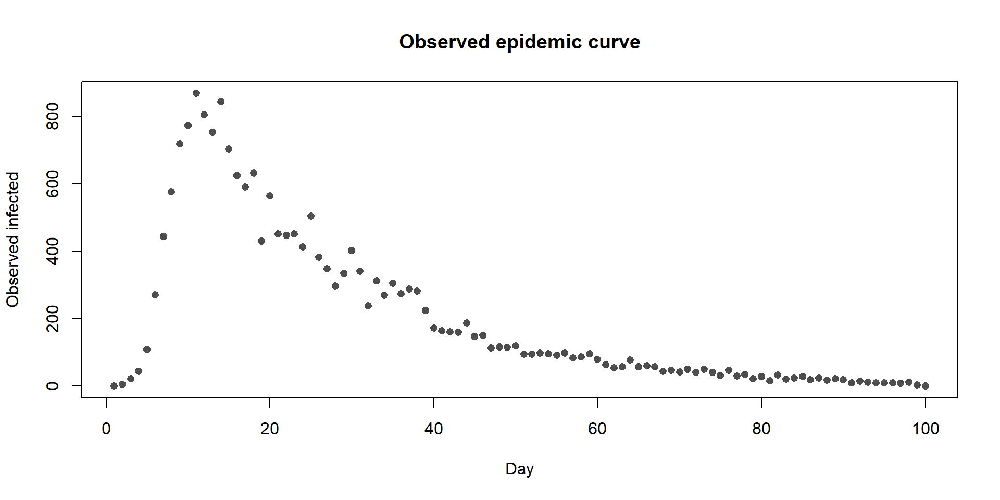
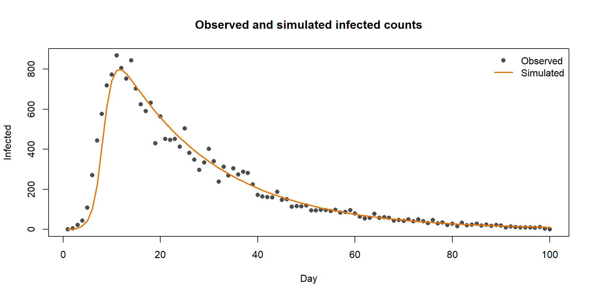
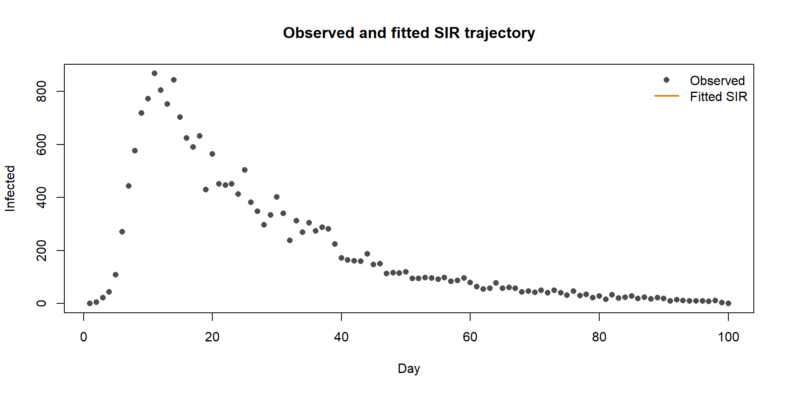

| day | total_cases |
|---|---|
| 1 | 1 |
| 2 | 5 |
| 3 | 22 |
| 4 | 44 |
| 5 | 109 |
| 6 | 271 |
This deck parks the old ODE-fitting extension from the combined ODE/optimization material. It is useful for learners who want to see how simulation code can be wrapped in an objective function, but it is not part of the Day 3 ODE core.
The point here is the programming pattern, not a recommended inference workflow.
The observed epidemic curve is local to this repository.
| day | total_cases |
|---|---|
| 1 | 1 |
| 2 | 5 |
| 3 | 22 |
| 4 | 44 |
| 5 | 109 |
| 6 | 271 |

simulate_sir <- function(beta, gamma, times) {
deSolve::ode(
y = c(S = 999, I = 1, R = 0),
times = times,
func = sir_ode,
parms = c(beta = beta, gamma = gamma)
)
}
example_simulation <- simulate_sir(
beta = 0.001,
gamma = 0.05,
times = observed_sir$day
)
head(example_simulation)| time | S | I | R |
|---|---|---|---|
| 1 | 999.0000 | 1.000000 | 0.0000000 |
| 2 | 997.3353 | 2.581321 | 0.0833883 |
| 3 | 993.0569 | 6.644762 | 0.2983410 |
| 4 | 982.1663 | 16.983963 | 0.8497058 |
| 5 | 955.1094 | 42.644174 | 2.2464489 |
| 6 | 891.7527 | 102.569003 | 5.6783062 |
plot(
observed_sir$day,
observed_sir$total_cases,
pch = 16,
col = "gray30",
xlab = "Day",
ylab = "Infected",
main = "Observed and simulated infected counts"
)
lines(example_simulation[, "time"], example_simulation[, "I"], col = "darkorange2", lwd = 2)
legend(
"topright",
legend = c("Observed", "Simulated"),
col = c("gray30", "darkorange2"),
pch = c(16, NA),
lty = c(NA, 1),
lwd = c(NA, 2),
bty = "n"
)
We need one number that says how badly a parameter pair fits.
Here we use the sum of squared residuals between observed infected counts and the simulated infected compartment:
\[ SSR = \sum_i \left(I_i - \hat{I}_i(\beta, \gamma)\right)^2 \]
sir_ssr <- function(par) {
beta <- par[1]
gamma <- par[2]
if (beta <= 0 || gamma <= 0) {
return(1e12)
}
simulated <- tryCatch(
simulate_sir(
beta = beta,
gamma = gamma,
times = observed_sir$day
),
error = function(e) NULL
)
if (is.null(simulated)) {
return(1e12)
}
predicted_infected <- simulated[, "I"]
if (any(!is.finite(predicted_infected))) {
return(1e12)
}
fit <- sum((observed_sir$total_cases - predicted_infected)^2)
if (!is.finite(fit)) {
return(1e12)
}
fit
}sir_fit <- optim(
par = c(beta = 0.001, gamma = 0.05),
fn = sir_ssr,
method = "L-BFGS-B",
lower = c(beta = 0.000001, gamma = 0.000001),
upper = c(beta = 0.01, gamma = 1)
)DLSODA- At T (=R1), too much accuracy requested
for precision of machine.. See TOLSF (=R2)
In above message, R1 = 2, R2 = nan
Warning in lsoda(y, times, func, parms, ...): Excessive precision requested.
scale up `rtol' and `atol' e.g by the factor 10Warning in lsoda(y, times, func, parms, ...): Returning early. Results are
accurate, as far as they goDLSODA- At T (=R1), too much accuracy requested
for precision of machine.. See TOLSF (=R2)
In above message, R1 = 2, R2 = nan
Warning in lsoda(y, times, func, parms, ...): Excessive precision requested.
scale up `rtol' and `atol' e.g by the factor 10
Warning in lsoda(y, times, func, parms, ...): Returning early. Results are
accurate, as far as they goDLSODA- At T (=R1), too much accuracy requested
for precision of machine.. See TOLSF (=R2)
In above message, R1 = 2, R2 = nan
Warning in lsoda(y, times, func, parms, ...): Excessive precision requested.
scale up `rtol' and `atol' e.g by the factor 10
Warning in lsoda(y, times, func, parms, ...): Returning early. Results are
accurate, as far as they goDLSODA- At T (=R1), too much accuracy requested
for precision of machine.. See TOLSF (=R2)
In above message, R1 = 2, R2 = nan
Warning in lsoda(y, times, func, parms, ...): Excessive precision requested.
scale up `rtol' and `atol' e.g by the factor 10
Warning in lsoda(y, times, func, parms, ...): Returning early. Results are
accurate, as far as they goDLSODA- At T (=R1), too much accuracy requested
for precision of machine.. See TOLSF (=R2)
In above message, R1 = 2, R2 = nan
Warning in lsoda(y, times, func, parms, ...): Excessive precision requested.
scale up `rtol' and `atol' e.g by the factor 10
Warning in lsoda(y, times, func, parms, ...): Returning early. Results are
accurate, as far as they go beta gamma
0.001 0.050 fitted_simulation <- simulate_sir(
beta = sir_fit$par["beta"],
gamma = sir_fit$par["gamma"],
times = observed_sir$day
)DLSODA- At T (=R1), too much accuracy requested
for precision of machine.. See TOLSF (=R2)
In above message, R1 = 2, R2 = nan
Warning in lsoda(y, times, func, parms, ...): Excessive precision requested.
scale up `rtol' and `atol' e.g by the factor 10Warning in lsoda(y, times, func, parms, ...): Returning early. Results are
accurate, as far as they goplot(
observed_sir$day,
observed_sir$total_cases,
pch = 16,
col = "gray30",
xlab = "Day",
ylab = "Infected",
main = "Observed and fitted SIR trajectory"
)
lines(fitted_simulation[, "time"], fitted_simulation[, "I"], col = "darkorange2", lwd = 2)
legend(
"topright",
legend = c("Observed", "Fitted SIR"),
col = c("gray30", "darkorange2"),
pch = c(16, NA),
lty = c(NA, 1),
lwd = c(NA, 2),
bty = "n"
)
Prompt
Change the starting values in optim() to beta = 0.005 and gamma = 0.50. Do the fitted parameters return to approximately the same values?
Hint
Only change the par = ... line. Keep the same bounds.
Solution outline
Run the same call with:
For this small example, the bounds and data are informative enough that the result should be very similar. For more complex ODE systems, starting values can matter a lot.